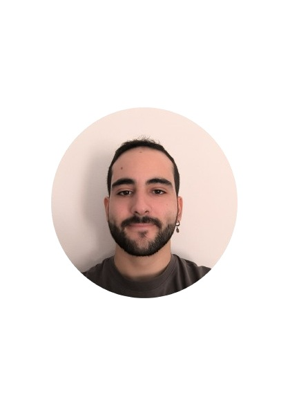

Estudiante de Desarrollo de Aplicaciones Multiplataforma
Alfredo
Martínez Cantero

Perfil Profesional
Profesional polivalente en proceso de formación como Técnico Superior en
Desarrollo de Aplicaciones Multiplataforma (DAM), con experiencia previa en los
ámbitos logístico y educativo. Capacidad de adaptación a distintos entornos,
con habilidades en resolución de problemas, organización y trabajo en equipo.
Actitud proactiva, motivación por la tecnología y orientación hacia el desarrollo
de software.
Experiencia
Preparador logístico
Almacenes Silla, Valencia | 2025
- Preparador de pedidos en plataformas logísticas de gran volumen.
- Verificación y control de mercancías.
- Manejo de transpaletas y herramientas de gestión logística.
- Cumplimiento de procedimientos de seguridad.
Logístico
Empresa Multinacional, Valencia | 2025
- Preparación de pedidos para expedición.
- Carga y descarga de mercancías.
- Organización y reposición de productos en el almacén.
- Control de stock y apoyo en las tareas logísticas.
Educación
Técnico Superior en Desarrollo de Aplicaciones Multiplataforma (DAM) en formación
CEAC, Valencia · Sept. 2025 —
Estudiando fundamentos de programación, bases de datos, desarrollo de interfaces y aplicaciones web y móviles.
Técnico Superior en Educación Infantil
IES Misericordia, Valencia · Sept. 2020 — Julio 2022
Atención a Personas en Situación de Dependencia
IES Misericordia, Valencia · Sept. 2018 — Julio 2020